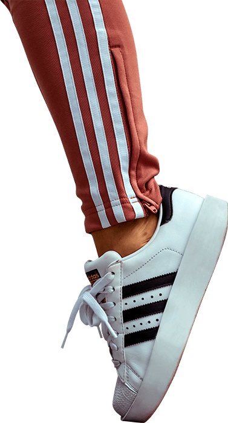
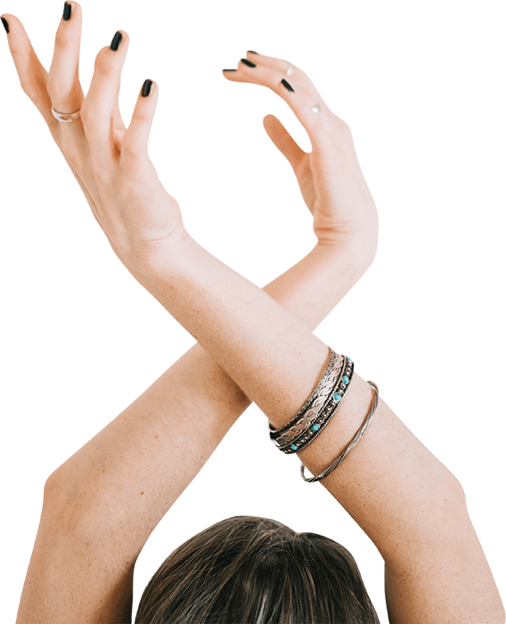
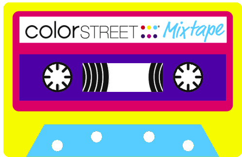
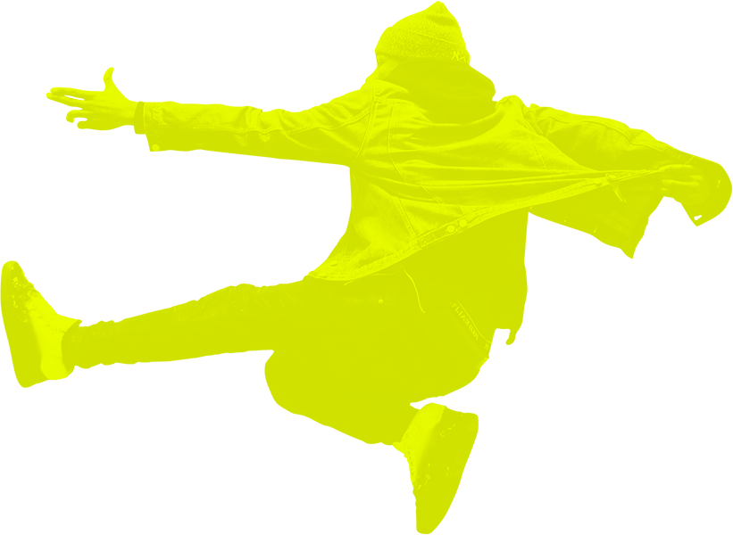
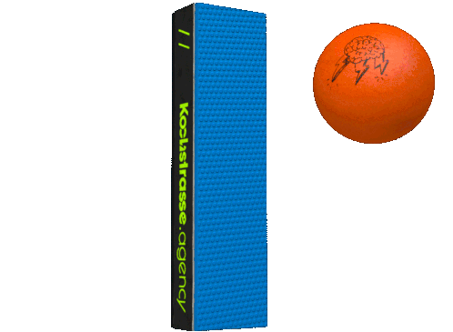
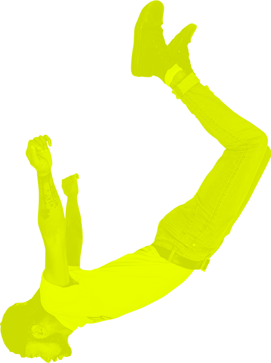
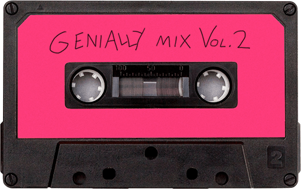

Sound symbol /iː/
Make your mouth wide, like a smile.
Your tongue touches the side of your teeth.

/iː/ is usually spelled ‘ee’ or ‘ea’. click a word to hear it
click the words in white to hear them

Sound symbol /ɪ/
Make your mouth a bit less wide than for /iː/.
Your tongue is a bit further back in your mouth than for /iː/.
/ɪ/ is usually spelled ‘i’. click a word to hear it
/ɪ/
A relaxed, quick sound as in “sit” or “ship”.
French equivalent: similar to the ‘i’ in vite, but shorter and more relaxed.
/iː/
Similar to the French ‘i’ but held longer.
A tense, sustained sound as in “seat” or “feel”.
B C D E G P T V
In an unstressed final syllable — happy, coffee, busy — the sound is like /iː/ but shorter.

These four are all short /ɪ/, and none of them are spelled the way you would expect:
Click each one and listen: the vowel you hear is the same /ɪ/ as in sit, whatever the spelling suggests.
Click the tape to listen